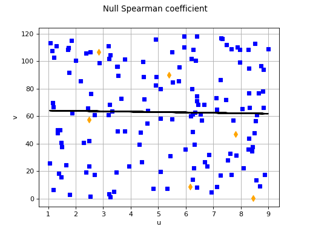

Uncertainty ranking: Spearman’s correlation¶
This method deals with analyzing the influence the random vector
 has on a random
variable which is being studied for uncertainty. Here we
attempt to measure monotonic relationships that exist between
and the different components
has on a random
variable which is being studied for uncertainty. Here we
attempt to measure monotonic relationships that exist between
and the different components  .
.
Spearman’s correlation coefficient , defined in
, measures the strength of a monotonic relation between two random
variables and . If we have a sample made up of
 pairs , , …,
, we can obtain
an estimation of Spearman’s coefficient.
pairs , , …,
, we can obtain
an estimation of Spearman’s coefficient.
Hierarchical ordering using Spearman’s coefficients deals with the case
where the variable monotonically depends on the
variables . To obtain an
indication of the role played by each in the dispersion of
, the idea is to estimate the Spearman correlation
coefficients for each  . One
can then order the variables
. One
can then order the variables  taking absolute values of the Spearman coefficients: the higher the
value of , the greater
the impact the variable has on the dispersion of
.
taking absolute values of the Spearman coefficients: the higher the
value of , the greater
the impact the variable has on the dispersion of
.
(Source code, png, hires.png, pdf)
{kind=link}
{kind=link}

API:
Examples:
References:
Saltelli, A., Chan, K., Scott, M. (2000). “Sensitivity Analysis”, John Wiley & Sons publishers, Probability and Statistics series
J.C. Helton, F.J. Davis (2003). “Latin Hypercube sampling and the propagation of uncertainty analyses of complex systems”. Reliability Engineering and System Safety 81, p.23-69
J.P.C. Kleijnen, J.C. Helton (1999). “Statistical analyses of scatterplots to identify factors in large-scale simulations, part 1 : review and comparison of techniques”. Reliability Engineering and System Safety 65, p.147-185